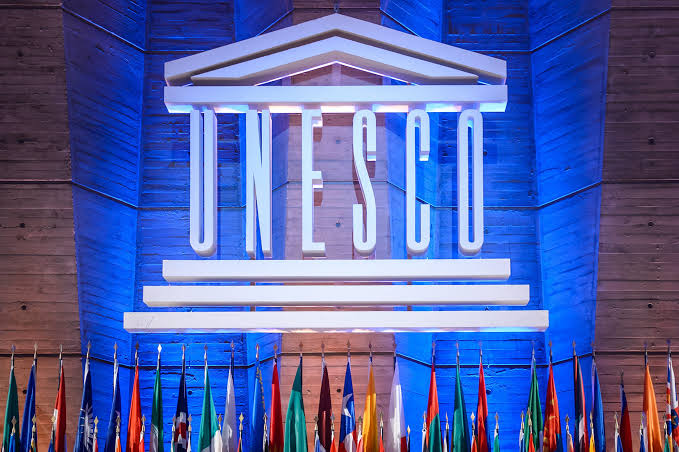

Kerja sama Multilateral
Kerja sama multilateral adalah bentuk kerja sama yang dilakukan oleh tiga negara atau lebih untuk mencapai tujuan bersama dan memperoleh manfaat dalam berbagai bidang, seperti pendidikan, ekonomi, kesehatan, dan lingkungan.
UNESCO
UNESCO (United Nations Educational, Scientific and Cultural Organization) merupakan organisasi internasional yang berperan dalam bidang pendidikan, ilmu pengetahuan, dan kebudayaan. UNESCO turut mengoordinasikan kerja sama antarnegara untuk mendukung tercapainya SDGs 4, terutama dalam meningkatkan kualitas dan pemerataan pendidikan di seluruh dunia. Program yang dilakukan adalah Education 2030 Framework for Action, yaitu kerangka kerja yang dibuat untuk mendukung tercapainya SDGs 4. Melalui program ini, UNESCO mendorong peningkatan akses pendidikan, penyediaan pendidikan dasar dan menengah gratis, serta memastikan setiap anak memiliki kemampuan membaca, menulis, dan berhitung.

Indonesia terlibat dalam kerja sama UNESCO dengan mendukung berbagai program pendidikan internasional serta berpartisipasi dalam upaya meningkatkan kualitas dan pemerataan pendidikan. Indonesia juga bekerja sama dengan UNESCO dalam mengembangkan sistem pendidikan agar lebih inklusif dan memberikan kesempatan belajar yang setara bagi seluruh anak.
Education 2030 Framework for Action mendukung SDGs 4 dengan menjadi pedoman bagi negara-negara untuk meningkatkan kualitas dan pemerataan pendidikan. Melalui kerangka kerja ini, UNESCO mendorong penyediaan pendidikan dasar dan menengah gratis, peningkatan kemampuan membaca dan berhitung, serta pemerataan akses pendidikan agar setiap anak memiliki kesempatan belajar yang setara.
Manfaat program bagi Indonesia dan negara lain
Program ini bermanfaat karena membantu mengurangi kesenjangan pendidikan dengan mendukung negara yang memiliki keterbatasan fasilitas dan tenaga pengajar. Selain itu, program ini memperluas akses pendidikan melalui penyediaan pendidikan gratis dan kesempatan belajar yang lebih merata sehingga semakin banyak anak dapat memperoleh pendidikan yang berkualitas.